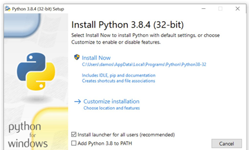
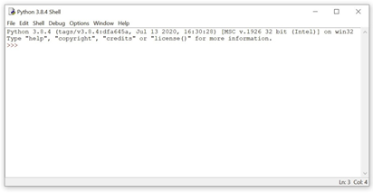

Chapter 2
Setting Up Python
This book is about programming computers with Python. You could read this book from cover to cover without
ever touching a keyboard, but you’d miss out on the fun part—coding!
To get the most out of this book, you need a computer with
Python installed on it and a way to create, edit, and save Python code files.
In this chapter, you’ll learn how to:
• Install the latest version of Python 3 on your computer
• Open IDLE, Python’s built-in Integrated Development and
Learning Environment
Let’s get started!
A Note on Python Versions
Many operating systems, including macOS and Linux, come with
Python preinstalled. The version of Python that comes with
your operating system is called the system Python.
The system Python is used by your operating system and is usually out of date. It’s essential that you have the
most recent version of Python so that you can successfully follow along
with the examples in this book.
You can have multiple versions of Python installed on your computer.
In this chapter, you’ll install the latest version of Python 3 alongside
any system Python that may already exist on your machine.
Note
Even if you already have Python 3.9 installed, it’s still a good idea to
skim this chapter to double-check that your environ- ment is set up for
following along with this book.
This chapter is split into three sections: Windows, macOS, and Ubuntu
Linux. Find the section for your operating system and follow the steps to get set up, then skip ahead to the next
chapter.
If you have a different operating system, then check out Real
“Python 3 Installation & Setup Guide”
to see if your OS is covered. Readers on tablets and mobile devices can refer to
the
“Online Python Interpreters”
for some browser-based options.
Windows
Follow these steps to install Python 3 and open IDLE on Windows.
Important
The code in this book is tested only against Python installed as described in this section.
Be aware that if you have installed Python through some other means, such as
Anaconda Python, you may encounter problems when running some of the code examples.
.
Install Python
Windows doesn’t typically come with a system Python. Fortunately, installation
involves little more than downloading and running the
Python installer from the Python.org website.
Step 1: Download the Python 3 Installer
Open a web browser and navigate to the following URL:
https://www.python.org/downloads/windows/
Click Latest Python 3 Release - Python 3.x.x located beneath the “Python Releases for Windows” heading near,
the top of the page. As of this writing, the latest version was Python 3.9.
Then scroll to the bottom and click Windows x86-64 executable
in- staller to start the download.
Note
If your system has a 32-bit processor, then you should choose the 32-bit installer. If you aren’t sure if your computer is
32-bit or 64-bit, stick with the
64-bit installer mentioned above
Step 2: Run the Installer
Open your Downloads folder in Windows Explorer and double-click the file to run the installer.
A dialog that looks like the following one will appear:

It’s okay if the Python version you see is greater than 3.9.0 as
long as the version is not less than 3.
Important
Make sure you select the box that says Add Python 3.x to PATH. If you install
Python without selecting this box, then you can run the installer again and select it
Click
Install Now
to install Python 3. Wait for the installation to finish,then continue to open IDLE.
Open IDLE
You can open IDLE in two steps:
1. Click the Start menu and locate the Python 3.9 folder.
2. Open the folder and select IDLE (Python 3.9).
IDLE opens a Python shell in a new window. The Python shell is an
interactive environment that allows you to type in Python code and
execute it immediately. It’s a great way to get started with Python!
Note
While you’re free to use a code editor other than IDLE if you
prefer, note that some chapters, especially chapter 7, “Finding and
Fixing Code Bugs,” do contain material specific to IDLE.
The Python shell window looks like this:
At the top of the window, you can see the version of Python that is
running and some information about the operating system. If you see
a version less than 3.9, then you may need to revisit the installation
instructions in the previous section.
The >>> symbol that you see is called a prompt. Whenever you see
this, it means that Python is waiting for you to give it some instruc- tions.
Now that you have Python installed, let’s get straight into writing your
first Python program! Go ahead and move on to chapter 3.
Chapter 3
Your First Python Program
Now that you have the latest version of Python installed on your com-
puter, it’s time to start coding!
In this chapter, you will:
• Write your first Python program
• Learn what happens when you run a program with an error
• Learn how to declare a variable and inspect its value
• Learn how to write comments
Ready to begin your Python journey? Let’s go!
Write a Python Program
If you don’t already have IDLE open, then go ahead and open it. There are two main
windows that you’ll work with in IDLE: the interactive window, which is the one that
opens when you start IDLE, and the editor window.
You can type code into both the interactive window and the editor win-
dow. The difference between the two windows is in how they execute code. In this
section, you’ll learn how to execute Python code in both windows.
The Interactive Window
IDLE’s interactive window contains a Python shell, which is a tex-
tual user interface used to interact with the Python language. You can type a bit of
Python code into the interactive window and press
to immediately see the results.
Hence the name interactive window.
The interactive window opens automatically when you start IDLE.
You’ll see the following text, with some minor differences depending on your
setup, displayed at the top of the window:
[MSC v.1916 32 bit (Intel)] on win32
Type "help", "copyright", "credits" or "license" for more information.
>>>
This text shows the version of Python that IDLE is running. You can also see
information about your operating system and some commands you can use
to get help and view information about Python.
The >>> symbol in the last line is called the prompt. This is where
you’ll type in your code.
Go ahead and type 1 + 1 at the prompt and press Enter :
2
>>>
Python evaluates the expression, displays the result (2), then displays another
prompt. Every time you run some code in the interactive win-
dow, a new prompt appears directly below the result.
Executing Python in the interactive window can be described as a loop
with three steps:
1. Python reads the code entered at the prompt.
2. Python evaluates the code.
3. Python prints the result and waits for more input.
This loop is commonly referred to as a read-evaluate-print loop and
is abbreviated as REPL. Python programmers sometimes refer to the
Python shell as the Python REPL, or just “the REPL” for short.
Let’s try something a little more interesting than adding numbers.
A rite of passage for every programmer is writing a program that print
the phrase “Hello, World” on the screen.
At the prompt in the interactive window, type the word print followed
by a set of parentheses with the text "Hello, World" inside:
Hello, World
A function is code that performs some task and can be invoked by a name.
The above code invokes, or calls, the print() function with
the text "Hello, World" as input.
The parentheses tell Python to call the print() function. They also en-
close everything that gets sent to the function as input. The quotation marks
indicate that "Hello, World" really is text and not something else.
Note
IDLE highlights parts of your code in different colors as you
type to make it easier for you to identify the different parts.
By default, functions are highlighted in purple and
text is high- lighted in green.
The interactive window executes a single line of code at a time.
This is useful for trying out small code examples and exploring the Python language,
but it has a major limitation: you have to enter your code one line at a time!
Alternatively, you can save Python code in a text file and execute all of the code
in the file to run an entire program.
The Editor Window
You’ll write your Python files using IDLE’s editor window. You can
open the editor window by selecting the top of the interactive window.
from the menu at
The interactive window stays open when you open the editor window.
It displays the output generated by code in the editor
window, so you’ll want to arrange the two windows
so that you can see them both at the same time.
In the editor window, type in the same code you used to print "Hello, World" in the interactive window:
IDLE highlights code typed into the editor window just like in the in-
teractive window.
Before you run your program, you need to save it. Select from the menu and save the file as hello_world.py.
Note
On some systems, the default directory for saving files in
IDLE is the Python installation directory. Do not save your files to this directory. Instead, save them to your desktop or to a folder in your
user’s home directory
The .py, extension indicates that a file contains Python code.
In fact, saving your file with any other extension removes the code highlight-
ing. IDLE only highlights Python code when it’s stored in a .py file.
Running Python Programs in the Editor Window
To run your program, select Run editor window.
from the menu in the
Note
Pressing F5 also runs a program from the editor window.
Program output always appears in the interactive window.
Every time you run code from a file, you’ll see something like the fol-
lowing output in the interactive window:
=======================RESTART============
IDLE restarts the Python interpreter, which is the computer program that actually
executes your code, every time you run a file. This makes sure that programs are
executed the same way each time.
Opening Python Files in the Editor Window
To open an existing file in IDLE, select
from the menu,
then select the file you want to open. IDLE opens every file in
a new editor window, so you can have several files open at the same time.
You can also open a file from a file manager, such as Windows Explorer
or macOS Finder. Right-click the file icon and select
to open the file in IDLE’s editor window.
Double-clicking on a .py file from a file manager executes the pro-
gram. However, this usually runs the file with the system Python, and the program window disappears
immediately after the program terminates—often before you can even see any output.
For now, the best way to run your Python programs is to open them
in IDLE’s editor window and run them from there.
Mess Things Up
Everybody makes mistakes—especially while programming! In case you haven’t made any
mistakes yet, let’s get a head start and mess something up on purpose to see what happens.
Mistakes in programs are called errors. You’ll experience two main types of
errors: syntax errors and runtime errors.
Syntax Errors
A syntax error occurs when you write code that isn’t allowed
in the Python language.
Let’s create a syntax error by removing the last quotation mark from the code in the
hello_world.py file that you created in the last section:
Save the file and press F5 to run it. The code won’t run! IDLE dis-
plays an alert box with the following message:
There are two terms in this message that may be unfamiliar:
1. A string literal is text enclosed in quotation marks. "Hello, World" is a string literal.
2. EOL stands for end of line.
So, the message tells you that Python got to the end of a line while reading a string
literal. String literals must be terminated with a quo-
tation mark before the end of a line.
IDLE highlights the line containing print("Hello, World) in red to help you quickly find the line of
code with the syntax error. Without the second quotation mark, everything after the
first quotation mark— including the closing parenthesis—is part of a string literal.
Runtime Errors
IDLE catches syntax errors before a program starts running. In con-
trast, runtime errors only occur while a program is running.
To generate a runtime error, remove both quotation marks in the
hello_world.py file:
Did you notice how the text color changed to black when you removed the quotation marks?
IDLE no longer recognizes Hello, World as text.
What do you think
will happen when you run the program? Press to find out!
The following text displays in red in the interactive window:
Whenever an error occurs, Python stops executing the program and displays several
lines of text called a traceback. The traceback
shows useful information about the error.
Tracebacks are best read from the bottom up:
• The last line of the traceback tells you the name of the error and the error message.
In this case, a NameError occurred because
the name Hello is not defined anywhere.
• The second to last line shows you the code that produced the error. There’s only one
line of code in hello_world.py, so it’s
not hard to guess where the problem is. This information is more helpful for larger files.
• The third to last line tells you the name of the file and the line num-
ber so you can go to the exact spot in your code where the error occurred.
In the next section, you’ll see how to define names for values in your code.
Before you move on, though, you can get some practice with syntax errors
and runtime errors by working on the review exercises.
Review Exercises
You can пnd the solutions to these exercises and many other bonus resources
online at realpython.com/python-basics/resources
1. Write a program that IDLE won’t run because it has a syntax error.
2. Write a program that crashes only while it’s running because it has a runtime error.
Create a Variable
In Python, variables are names that can be assigned a value and then used to
refer to that value throughout your code.
Variables are fundamental to programming for two reasons:
1. Variables keep values accessible: For example, you can as-
sign the result of some time-consuming operation to a variable so that your program doesn’t have to perform the
operation each time you need to use the result.
2. Variables give values context: The number 28 could mean lots of different things, such as the number
of students in a class, the number of times a user has accessed a website, and so on. Giving the value 28 a name like num_students
makes the meaning of the value clear.
In this section, you’ll learn how to use variables in your code, as well as some
of the conventions Python programmers follow when choosing names for variables.
The Assignment Operator
An operator is a symbol, such as +, that performs an operation on one
or more values. For example, the + operator takes two numbers, one to the left of the
operator and one to the right, and adds them together.
Values are assigned to variable names using a special symbol called
the assignment operator (=) . The = operator takes the value to the right
of the operator and assigns it to the name on the left.
Let’s modify the hello_world.py file from the previous section to assign some
text in a variable before printing it to the screen:
On the first line, you create a variable named greeting and assign
it the value "Hello, World" using the = operator.
print(greeting) displays the output Hello, World because Python looks for the name
greeting, finds that it’s been assigned the value "Hello, World", and replaces the
variable name with its value before calling the function.
If you hadn’t executed greeting = "Hello, World" before executing
print(greeting), then you would have seen a NameError like you did when you tried to execute
print(Hello, World) in the previous section.
Note
Although = looks like the equals sign from mathematics, it has a different meaning in
Python. This distinction is important and can be a source of frustration for beginner
programmers.
Just remember, whenever you see the = operator, whatever is to the right of it is being assigned to a variable on the left
Variable names are case sensitive, so a variable named greeting is
not the same as a variable named Greeting.
For instance, the following code produces a NameError:
If you have trouble with an example in this book, double-check that every character in
your code—including spaces—matches the example exactly. Computers have no common sense,
so being almost correct isn’t good enough!
Rules for Valid Variable Names
Variable names can be as long or as short as you like, but there are a few rules that you must follow.
Variable names may contain upper- case and lowercase letters (A–Z, a–z), digits (0–9), and
underscores (_), but they cannot begin with a digit.
For example, each of the following is a valid Python variable name:
• string1
• _a1p4a
• list_of_names
The following aren’t valid variable names because they start with a digit:
• 9lives
• 99_balloons
• 2beOrNot2Be
In addition to English letters and digits, Python variable names may contain many different valid Unicode characters.
Unicode is a standard for digitally representing characters used in most of the world’s writing systems. That means variable names can contain letters from non-English alphabets, such as decorated letters
like é and ü, and even Chinese, Japanese, and Arabic symbols.
However, not every system can display decorated characters, so it’s a good idea to avoid them if you’re going to share your code with people in different regions.
Note
You’ll learn more about Unicode in chapter 12.
You can also read about Python’s support for Unicode in the official Python documentation.
Just because a variable name is valid doesn’t necessarily mean that it’s a good name
.Choosing a good name for a variable can be surprisingly difficult. For- tunately, there are some guidelines that you can follow to help you choose better names.
Descriptive Names Are Better Than Short Names
Descriptive variable names are essential, especially for complex programs. Writing descriptive names often requires using multiple words. Don’t be afraid to use long variable names.
In the following example, the value 3600 is assigned to the variable s:
The name s is totally ambiguous. Using a full word makes it a lot easier to understand what the code means:
seconds is a better name than s because it provides more context. But it still doesn’t convey the full meaning of the code. Is 3600 the number of seconds it takes for a process to finish, or is it the length of a movie? There’s no way to tell.
The following name leaves no doubt about what the code means:
When you read the above code, there’s no question that 3600 is the number of seconds in an hour. seconds_per_hour takes longer to type than both the single letter s and the word seconds, but the payoff in clarity is massive.
Although naming variables descriptively means using longer variable names, you should avoid using excessively long names. A good rule of thumb is to limit variable names to three or four words maximum.
Python Variable Naming Conventions
In many programming languages, it’s common to write variable names in mixedCase. In this system, you capitalize the first letter of every word except the first and leave all other letters in lowercase. For example, numStudents and listOfNames are written in mixedCase.
In Python, however, it’s more common to write variable names in lower_case_with_underscores. In this system, you leave every letter in lowercase and separate each word with an underscore. For instance, both num_students and list_of_names are written using the lower_case_with_underscores system.
There’s no rule mandating that you write your variable names in lower_case_with_underscores. The practice is codified, though, in a document called PEP 8, which is widely regarded as the official style guide for writing Python.
Note
PEP stands for Python Enhancement Proposal. A PEP is a de- sign document used by the Python community to propose new features to the language
Following the standards outlined in PEP 8 ensures that your Python code is readable by most Python programmers. This makes sharing code and collaborating with other people easier for everyone involved.
Review Exercises
You can пnd the solutions to these exercises and many other bonus resources online at realpython.com/python-basics/resources
1. Using the interactive window, display some text using print().
2. Using the interactive window, assign a string literal to a variable. Then print the contents of the variable using the print() function.
3. Repeat the first two exercises using the editor window.
Inspect Values in the Interactive Window
Type the following into IDLE’s interactive window:
When you press after typing greeting a second time, Python prints the string literal assigned to greeting even though you didn’t use the print() function. This is called variable inspection.
Now print the string assigned to greeting using the print() function:
Can you spot the difference between the output displayed by using print() and the output displayed by just entering the variable name and pressing Enter ?
When you type the variable name greeting and press Enter , Python prints the value assigned to the variable as it appears in your code. You assigned the string literal "Hello, World" to greeting, which is why 'Hello, World' is displayed with quotation marks.
Note
String literals can be created with single or double quotation marks in Python. At Real Python, we use double quotes wher- ever possible, whereas IDLE output appears in single quotes by default. Both "Hello, World" and 'Hello, World' mean the same thing in Python—what’s most important is that you be consistent in your usage. You’ll learn more about strings in chapter 4
On the other hand, print() displays a more human-readable represen- tation of the variable’s value which, for string literals, means display- ing the text without quotation marks.
Sometimes, both printing and inspecting a variable produce the same output:
Here, you assign the number 2 to x. Both using print(x) and inspecting x display output without quotation marks because 2 is a number and not text. In most cases, though, variable inspection gives you more useful information than print().
Suppose you have two variables: x, which is assigned the number 2, and y, which is assigned the string literal "2". In this case, print(x) and print(y) both display the same thing:
However, inspecting x and y shows the difference between each vari- able’s value:
The key takeaway here is that print() displays a readable representa- tion of a variable’s value, while variable inspection displays the value as it appears in the code.
Keep in mind that variable inspection works only in the interactive window. For example, try running the following program from the editor window:
The program executes without any errors, but it doesn’t display any output!
How to Write a Comment
The most common way to write a comment is to begin a new line in your code with the # character. When you run your code, Python ig- nores lines starting with #.
Comments that start on a new line are called block comments. You can also write inline comments, which are comments that appear on the same line as the code they reference. Just put a # at the end of the line of code, followed by the text in your comment.
Here’s an example of a program with both kinds of comments:
Of course, you can still use the # symbol inside a string. For instance, Python won’t mistake the following for the start of a comment:
In general, it’s a good idea to keep comments as short as possible, but sometimes you need to write more than reasonably fits on a single line. In that case, you can continue your comment on a new line that also begins with the # symbol:
You can also use comments to comment out code while you’re test- ing a program. Putting a # at the beginning of a line of code lets you run your program as if that line of code didn’t exist, but it doesn’t ac- tually delete the code.
To comment out a section of code in IDLE, highlight one or more lines to be commented and press:
• Windows:Alt + 3
• macOS:Ctrl + 3
• Ubuntu Linux:Ctrl + D
To remove comments, highlight the commented lines and press:
• Windows: Alt + 4
• macOS: Ctrl + 4
• Ubuntu Linux: Ctrl +Shift + D
Now let’s look at some common conventions for code comments.
Conventions and Pet Peeves
According to PEP 8, comments should always be written in complete sentences with a single space between the # and the first word of the comment:
For inline comments, PEP 8 recommends at least two spaces between
the code and the # symbol:
PEP 8 recommends that comments be used sparingly. A major pet peeve among programmers is comments that describe what is already obvious from reading the code.
For example, the comment in the following code is unnecessary:
The comment is unnecessary because the code itself explicitly de- scribes what’s happening. Comments are best used to clarify code that may be difficult to understand or to explain why something is coded a certain way.
Summary and Additional Resources
In this chapter, you wrote and executed your first Python program! You wrote a small program that displays the text "Hello, World" using the print() function.
Then you learned about syntax errors, which occur before IDLE ex- ecutes a program that contains invalid Python code, and runtime errors, which only occur while a program is running.
You saw how to assign values to variables using the assignment operator (=) and how to inspect variables in the interactive window.
Finally, you learned how to write helpful comments in your code for when you or someone else looks at it in the future.
Chapter 4
Strings and String Methods
Many programmers, regardless of their specialty, deal with text on a daily basis. For example, web developers work with text input from web forms. Data scientists process text to extract data and perform tasks like sentiment analysis, which can help identify and classify opinions in a body of text.
Collections of text in Python are called strings. Special functions
called string methods are used to manipulate strings. There are string methods for changing a string from lowercase to uppercase, re-
moving whitespace from the beginning or end of a string, replacing parts of a string with different text, and much more.
In this chapter, you’ll learn how to:
• Manipulate strings with string methods
• Work with user input
• Deal with strings of numbers
• Format strings for printing
Let’s get started!
What Is a String?
In chapter 3, you created the string "Hello, World" and printed it in IDLE’s interactive window using print(). In this section, you’ll get a deeper look into exactly what strings are and the various ways you can create them in Python.
The String Data Type
Strings are one of the fundamental Python data types. The term data type refers to what kind of data a value represents. Strings are used to represent text.
Note
There are several other data types built into Python. For exam- ple, you’ll learn about numerical data types in chapter 5 and Boolean data types in chapter 8.
We say that strings are a fundamental data type because they can’t be broken down into smaller values of a different type.
Not all data types are fundamental. You’ll learn about compound data types, also known as data structures, in chapter 9.
The string data type has a special abbreviated name in Python: str. You can see this by using type(), which is a function used to determine the data type of a given value.
Type the following into IDLE’s interactive window:
The output class 'str'> indicates that the value "Hello, World" is an instance of the str data type. That is, "Hello, World" is a string.
Note
TFor now, you can think of the word class as a synonym for data type, although it actually refers to something more specific. You’ll see just what a class is in chapter 10
type() also works for values that have been assigned to a variable:
Strings have three important properties:
1. Strings contain individual letters or symbols called characters.
2. Strings have a length, defined as the number of characters the string contains.
3. Characters in a string appear in a sequence, which means that each character has a numbered position in the string.
Let’s take a closer look at how strings are created.
String Literals
As you’ve already seen, you can create a string by surrounding some text with quotation marks:
You can use either single quotes (string1) or double quotes (string2) to create a string as long as you use the same type at the beginning and end of the string.
Whenever you create a string by surrounding text with quotation marks, the string is called a string literal.
The name indicates that the string is literally written out in your code. All the strings you’ve seen thus far are string literals.
Note
Not every string is a string literal. Sometimes strings are input by a user or read from a file. Since they’re not typed out with quotation marks in your code, they’re not string literals.
The quotes surrounding a string are called delimiters because they tell Python where a string begins and where it ends. When one type of quotes is used as the delimiter, the other type can be used inside the string:
After Python reads the first delimiter, it considers all the characters after it part of the string until it reaches a second matching delimiter.
This is why you can use a single quote in a string delimited by double quotes, and vice versa.
If you try to use double quotes inside a string delimited by double quotes, you’ll get an error:
Python throws a SyntaxError because it thinks the string ends after the second ", and it doesn’t know how to interpret the rest of the line. If you need to
include a quotation mark that matches the delimiter in- side a string, then you can escape the character using a backslash:
Note
When you work on a project, it’s a good idea to use only single quotes or only double quotes to delimit every string.
Keep in mind that there really isn’t a right or wrong choice! The goal is to be consistent because consistency helps make your code easier to read and understand.
Strings can contain any valid Unicode character. For example, the string "We're #1!" contains the pound sign (#) and "1234" contains num- bers. "×Pýŧħøŋ×" is also a valid Python string!
Determine the Length of a String
The number of characters contained in a string, including spaces, is called the length of the string. For example, the string "abc" has a length of 3, and the string "Don't Panic" has a length of 11.
Python has a built-in len() function that you can use to determine the length of a string. To see how it works, type the following into IDLE’s interactive window:
You can also use len() to get the length of a string that’s assigned to a variable:
First, you assign the string "abc" to the variable letters. Then you use
len() to get the length of letters, which is 3.
Multiline Strings
The PEP 8 style guide recommends that each line of Python code con- tain no more than seventy-nine characters—including spaces.
Note
PEP 8’s seventy-nine-character line length is a recommenda- tion, not a rule. Some Python programmers prefer a slightly longer line length.
In this book, we’ll strictly follow PEP 8’s recommended line length.
Whether you follow PEP 8 or choose a longer line length, sometimes you’ll need to create string literals with more characters than your cho- sen limit.
To deal with long strings, you can break them up across multiple lines into multiline strings. For example, suppose you need to fit the following text into a string literal:
This planet has—or rather had—a problem, which was this: most of the people living on it were unhappy
for pretty much of the time. Many solutions were suggested for this problem, but most of these were largely con- cerned with the
movements of small green pieces of paper, which is odd because on the whole it wasn’t
the small green pieces of paper that were unhappy.
— Douglas Adams, The Hitchhiker’s Guide to the Galaxy
This paragraph contains far more than seventy-nine characters, so any line of code containing the paragraph as a string
literal violates PEP 8. So, what do you do?
There are a couple of ways to tackle this. One way is to break the string up across multiple lines and put a backslash (\) at the end of all but the
last line. To be PEP 8 compliant, the total length of the line, including the backslashes, must be seventy-nine characters or fewer.
Here’s how you could write the paragraph as a multiline string using the backslash method:
Notice that you don’t have to close each line with a quotation mark. Normally, Python would get to the end
of the first line and complain that you didn’t close the string with a matching double quote. With a backslash at the end,
you can keep writing the same string on the next line.
When you print() a multiline string that’s broken up by backslashes, the output is displayed on a single line:
You can also create multiline strings using triple quotes (""" or ''') as delimiters. Here’s how to write a long paragraph using this approach:
Triple-quoted strings preserve whitespace, including newlines. This means that running print(paragraph) would
display the string on mul- tiple lines, just as it appears in the string literal. This may or may not be what you want, so you’ll need to
think about the desired output before you choose how to write a multiline string.
To see how whitespace is preserved in a triple-quoted string, type the following into IDLE’s interactive window:
Notice how the second and third lines in the output are indented in exactly the same way as the string literal.
Concatenation, Indexing, and Slicing
Now that you know what a string is and how to declare string literals in your code, let’s explore some of the things you can do with strings.
In this section, you’ll learn about three basic string operations:
1. Concatenation, which joins two strings together
2. Indexing, which gets a single character from a string
3. Slicing, which gets several characters from a string at once
Let’s dive in!
String Concatenation
You can combine, or concatenate, two strings using the + operator:
In this example, the string concatenation occurs on the third line. You concatenate string1 and string2 using +, and then you
assign the re- sult to the variable magic_string. Notice that the two
strings are joined without any whitespace between them.
You can use string concatenation to join two related strings, such as joining a
first name and a last name into a full name:
Here, you use string concatenation twice on the same line. First, you concatenate first_name with " " to ensure a space
appears after the first name in the final string. This produces the string "Arthur ", which you
then concatenate with last_name to produce the full name "Arthur Dent".
String Indexing
Each character in a string has a numbered position called an index. You can access the character at the nth position by
putting the number n between two square brackets ([]) immediately after the string:
flavor[1] returns the character at position 1 in "fig pie", which is i. Wait. Isn’t f the first character of "fig pie"?
In Python—and in most other programming languages—counting al- ways starts at zero. To get the character
at the beginning of a string, you need to access the character at position 0:
Note
Forgetting that counting starts with zero and trying to access the first character in a string with the index 1 results in an oп- by-one error.
Off-by-one errors are a common source of frustration for begin- ning and experienced programmers alike!
The following figure shows the index for each character of the string "fig pie":
| f | i | g | | p | i | e |
0 1 2 3 4 5 6
If you try to access an index beyond the end of a string, then Python raises an IndexError:
The largest index in a string is always one less than the string’s length. Since "fig pie" has a length of seven, the largest index allowed is 6.
Strings also support negative indices:
The last character in a string has index -1, which for "fig pie" is the letter e. The second to last character i has index -2, and so on.
The following figure shows the negative index for each character in the string "fig pie":
| f | i | g | | p | i | e |
-7 -6 -5 -4 -3 -2 -1
Just like with positive indices, Python raises an IndexError if you try to access a negative index less than the index of the first character in the string:
Negative indices may not seem useful at first, but sometimes they’re a better choice than a positive index.
For example, suppose a string input by a user is assigned to the vari- able user_input. If you need to get the last character of the string, how do you know what index to use?
One way to get the last character of a string is to calculate the final index using len():
Getting the final character with the index -1 takes less typing and doesn’t require an intermediate step to calculate the final index:
String Slicing
Suppose you need a string containing just the first three letters of the string "fig pie". You could access each character by index and con- catenate them like this:
If you need more than just the first few letters of a string, then get-
ting each character individually and concatenating them together is clumsy and long-winded.
Fortunately, Python provides a way to do this with much less typing.
You can extract a portion of a string, called a substring, by inserting a
colon between two index numbers set inside square brackets like this:
flavor[0:3] returns the first three characters of the string assigned to flavor, starting with the character at index 0 and going up to but not in- cluding the character at index 3. The [0:3] part of flavor[0:3] is called a slice. In this case, it returns a slice of "fig pie". Yum!
String slices can be confusing because the substring returned by the slice includes the character whose index
is the first number but doesn’t include the character whose index is the second number.
To remember how slicing works, you can think of a string as a se- quence of square slots. The left and right boundaries of
each slot are numbered sequentially from zero up to the length of the string,
and each slot is filled with a character in the string.
Here’s what this looks like for the string "fig pie":
| f | i | g | | p | i | e |
0 1 2 3 4 5 6 7
So, for "fig pie", the slice [0:3] returns the string "fig", and the slice [3:7] returns the string " pie".
If you omit the first index in a sli ce, then Python assumes you want to start at index 0:
The slice [:3] is equivalent to the slice [0:3], so flavor[:3] returns the first three characters in the string "fig pie".